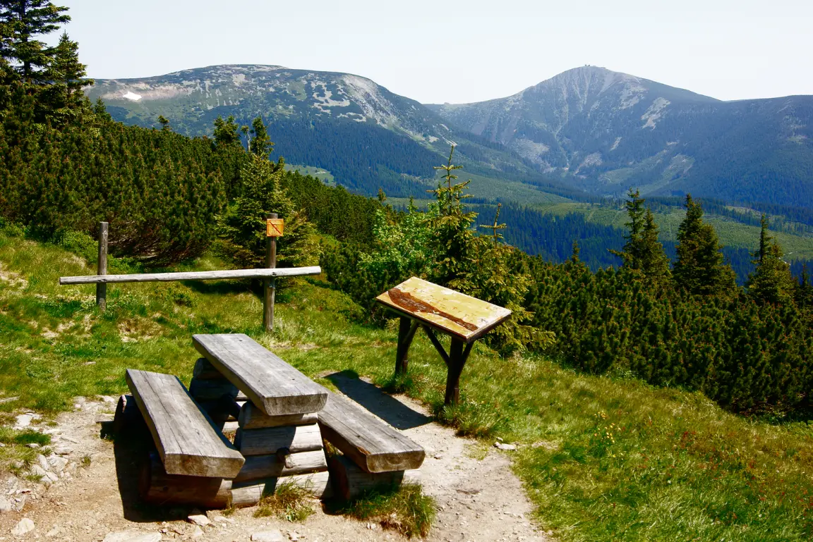
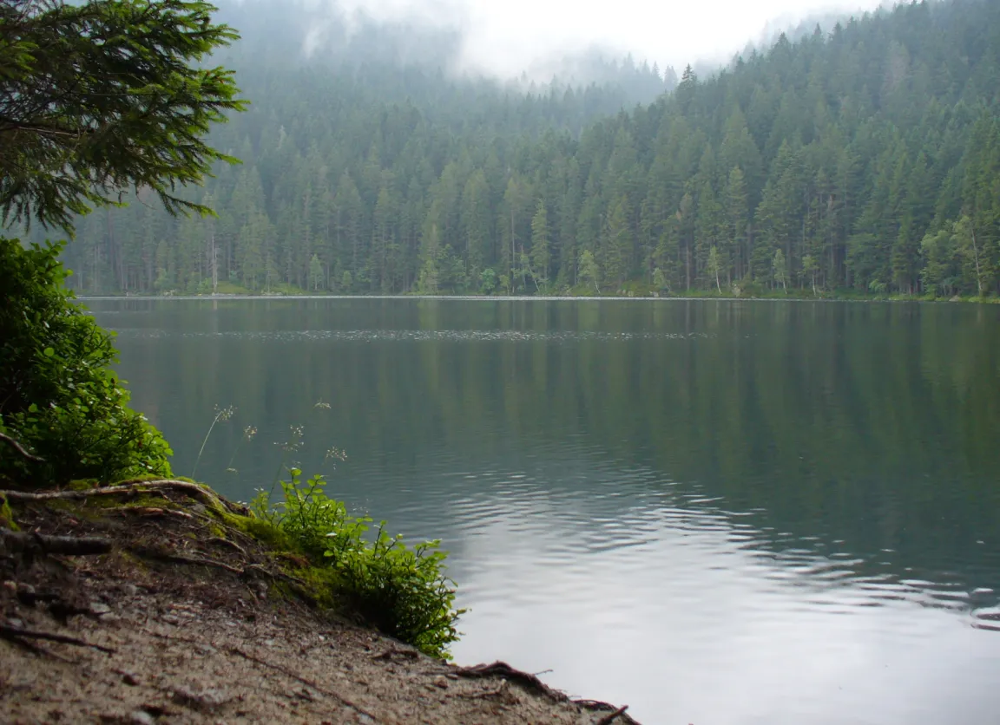
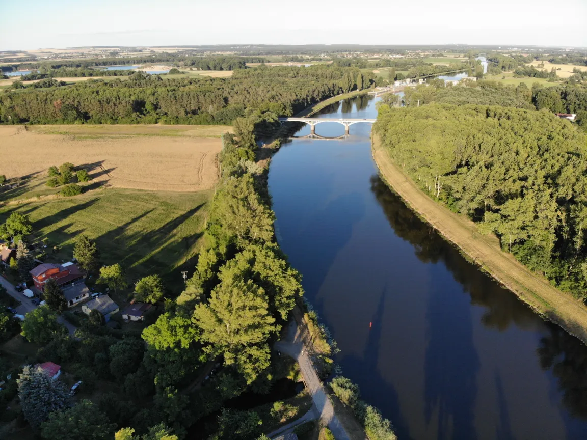
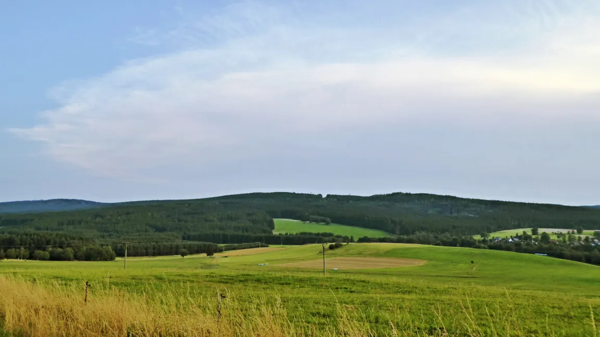
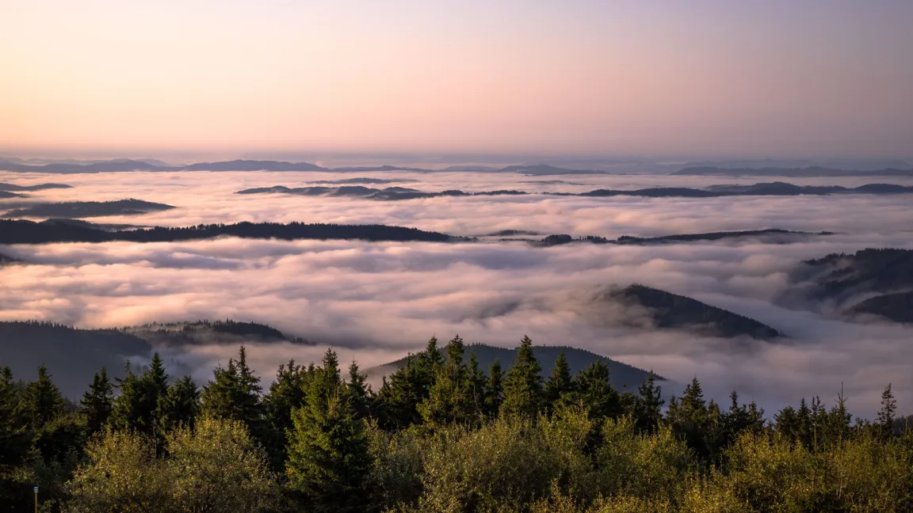
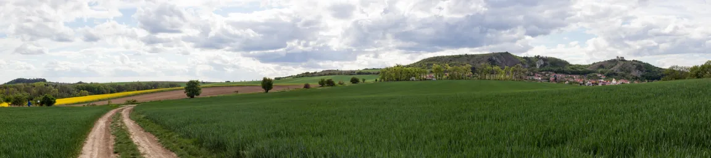

⛰️ Povrch
Pohraniční hory: Krkonoše se Sněžkou (1 603 m), Šumava, Krušné hory, Jeseníky, Beskydy. Nížiny: Polabí a na jihu Moravy Dolnomoravský úval.
Pro 8. ročník: pohoří a nížiny, řeky a úmoří, podnebí České republiky.
Česko je vnitrozemský stát „vyzdvižený“ nad okolí. Po okrajích ho lemují pohoří, uvnitř jsou pahorkatiny, vrchoviny a nížiny podél řek. Z toho plyne i jeho vodstvo: řeky z Česka odtékají, žádná velká sem nepřitéká.
Pohraniční hory: Krkonoše se Sněžkou (1 603 m), Šumava, Krušné hory, Jeseníky, Beskydy. Nížiny: Polabí a na jihu Moravy Dolnomoravský úval.
Labe (s Vltavou) → Severní moře; Odra → Baltské moře; Morava (s Dyjí) → Dunaj → Černé moře. Proto „střecha Evropy“.
Mírné pásmo, přechodné podnebí mezi oceánským a vnitrozemským; vzduch k nám proudí nejčastěji od západu, od Atlantiku.
Teplotu u nás nejvíc ovlivňuje nadmořská výška: s každými 100 m stoupání klesne teplota zhruba o 0,6 °C. Proto je nejtepleji a nejsušeji v nížinách na jižní Moravě a nejchladněji na horách. V zimě se v kotlinách může držet studený vzduch pod teplejším – to je inverze.
Typická chyba: Vltava je nejdelší česká řeka, ale do moře nedoteče sama – u Mělníka se vlévá do Labe, a moře se proto určuje podle Labe. Úmoří vždy sleduj až k moři.
Do kterého moře doteče voda, která protéká Vltavou v Praze?
✅ Voda z Vltavy doteče přes Labe do Severního moře.
Porovnej výšku a členitost reliéfu, lesnatost, využití půdy i podobu vodních toků. Každá oblast má jinou kombinaci přírodních podmínek.






Česko leží na rozvodí tří moří: Labe s Vltavou teče do Severního moře, Odra do Baltského a Morava s Dyjí přes Dunaj do Černého moře. Nejvyšší horou je Sněžka (1 603 m) v Krkonoších.